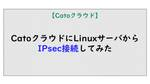
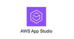

TechHarmony
https://blog.usize-tech.com
エンジニアブログ by SCSK
フィード
【GCP】Cloud FunctionsのCloud StorageトリガーでDataFusionパイプラインを起動
TechHarmony
こんにちは。SCSKの山口です。 今回は、Cloud Functions とData Fusionを組み合わせて、下記のパイプラインを構築してみたいと思います。 Cloud Functions のEventarc トリガ […]
7時間前

Cato クラウドに Linux サーバから IPsec 接続してみた
TechHarmony
本記事は 夏休みクラウド自由研究 8/9付の記事です。 はじめに Cato クラウドのネットワークに AWS や Azure などのパブリッククラウドを接続する場合、vSocket という仮想マシンイメージ形式で提供され […]
15時間前

【Catoクラウド】vSocketで複数VPC/VNetを接続したい
TechHarmony
本記事は 夏休みクラウド自由研究 8/8付の記事です。 AWS/Azure等のパブリッククラウドをCatoクラウドへ接続する方法には、以下の3つがありますが、このうち最も手軽で多く利用されている方法がvSocketです。 […]
2日前

【CSPM】Prisma Cloud でアカウントグループとアラートルールを設定してアラート通知のカスタムをしてみた
TechHarmony
Prisma Cloudは、クラウド環境のセキュリティとコンプライアンスを一元管理するツールで、リアルタイムの脅威検出やリソースのチェックが可能です。 今回は、クラウドアカウントをアカウントグループに追加し、重要度の高い […]
2日前
【GCP】BigQueryでウィンドウ関数（分析関数）を使ってデータ分析してみる
TechHarmony
こんにちは。SCSKの山口です。 今回は、BigQueryでウィンドウ関数（分析関数）を使ってデータを集約してみたいと思います。 テーブル全体ではなく、特定の実行範囲（パーティション）での処理が実行できる便利な機能です。 […]
2日前
Cato Clientのセッション切断機能を使ってみた ～Revoke Session～
TechHarmony
本記事は 夏休みクラウド自由研究 8/7付の記事です。 こんにちは！SCSKの中山です。 少し前のアップデートにて、Cato Clientのセッション強制切断(Revoke Session)機能が実装されま […]
3日前
Google Cloud Next Tokyo ’24に参加してみた
TechHarmony
こんにちは。SCSKの江木です。 Google Cloud Next Tokyo ’24に参加してきたので、インベントの様子や感想を投稿します。 Google Cloud Next Tokyo ’ […]
4日前
【GCP】Cloud Data Fusion で Wrangler を柔軟に使い倒す
TechHarmony
本記事は 夏休みクラウド自由研究 8/6付の記事です。 こんにちは。SCSKの山口です。 最近、Google CloudのData Fusionでパイプラインを構築する機会が多くあり、その中でも「Wrangler」のプラ […]
4日前
Cloud FunctionsのCloud Storageトリガーをフォルダレベルで指定したい！！
TechHarmony
こんにちは！SCSKの江木です。 先日、Dialogflow CXのAgentからのテストケース作成を自動化していて、「あるフォルダにファイルがアップロードされたら起動するCloud Functionsを作りたい」とふと […]
4日前

AWS App Studioを触ってみよう！
TechHarmony
本記事は 夏休みクラウド自由研究 8/5付の記事です。 こんにちは。ひるたんぬです。 先日この暑さに身体がやられてしまい、休みのほとんどを寝て過ごしました… 何もせずにただひたすら横になることに最初は罪悪感を感じておりま […]
5日前
Prisma Cloud の Defender を詳しく解説
TechHarmony
本記事は 夏休みクラウド自由研究 8/4付の記事です。 みなさんこんにちは。 本ブログでは、Prisma Cloudを用いたサービス開発や運営の中で得た知見や、使いこなし方を共有することで、クラウドセキュリティの重要性の […]
6日前
SQSキューポリシーの明示的な拒否の定義に失敗して、SQSにアクセスできなくなった話
TechHarmony
本記事は 夏休みクラウド自由研究 8/3付の記事です。 こんにちは、SCSK齋藤です。 今回は、SQSキューポリシーに明示的な拒否を設定しましたが、考えが甘かったせいで、SQSにアクセスできなくなったお話を書いていきます […]
7日前
Dialogflow CX Agentからの単体テストケース作成を自動化してみる
TechHarmony
本記事は 夏休みクラウド自由研究 8/2付の記事です。 こんにちは。SCSKの江木です。 夏休みクラウド自由研究2024の2日目の記事になります。 みなさん、単体テストケース作成に時間がかかりすぎていませんか？ 先日Di […]
8日前
【現地速報】Google Cloud Next ’24 Tokyo Keynoteまとめ。/スポンサーブースにも出展中!!!!!!
TechHarmony
こんにちは。SCSKの島村です。 今年もGoogle Cloud のカンファレンスイベントGoogle Cloud Next Tokyo ’24がパシフィコ横浜にて開催されております。 8月1日（木）－2日（金）の二日間 […]
8日前
Amazon Bedrock RAG 環境用 AWS CloudFormation テンプレート series 1 VPC 編
TechHarmony
本記事は 夏休みクラウド自由研究 8/1付の記事です。 こんにちは、広野です。 以前、以下の記事で Amazon Bedrock や Agents for Amazon Bedrock を使用した最小構成 RAG 環境構 […]
9日前
【CWPP】Prisma Cloud のサーバーレスディフェンダーの導入方法
TechHarmony
はじめに 今回はPythonで作成したAWS Lambda関数を保護するサーバーレスディフェンダーの導入方法を解説していきます。 サーバーレスディフェンダーには関数組み込み型とレイヤー型の2つの種類があり、今回は両方導入 […]
10日前
第9回 HULFT × LifeKeeperでミドルウェアの高可用性を実現！
TechHarmony
こんにちは、皆さん。 LifeKeeperの記事ではこれまで、製品に関する機能や利用用途についてご紹介してきました。 今回はそんなLifeKeeperとミドルウェアを組み合わせて、ミドルウェアにおけるニーズの高まりと 運 […]
11日前

Cloud RunジョブのログレベルをCloud Loggingへ反映する方法
TechHarmony
こんにちは。磯野です。 Cloud RunでPythonプログラムを実行する際、ログレベルをCloud Loggingへ反映させる方法をご紹介します。 はじめに Cloud Runのログは自動的にCloud Loggin […]
16日前
ログ監視に役立つZabbix正規表現の使い方
TechHarmony
こんにちは。SCSK株式会社の上田です。 今回は、Zabbixの監視で利用できる”正規表現”という機能の使い方を紹介します。正規表現を使うことで、複雑な条件にマッチするログの監視をすることが可能で […]
16日前
探訪：AWS SDK (Boto3)
TechHarmony
こんにちは、ひるたんぬです。 最近は耐え難い暑さが続いておりますね… 私はとても暑さに弱い生物なので、ひと月ほど前からエアコンの恩恵にあずかっているのですが、エアコンの設定温度ってとても難しいなと思っています。 というの […]
17日前
Cato Networks社が 2024年 ガートナーのマジック・クアドラントのシングルベンダー SASE でリーダーに認定
TechHarmony
Cato Networks社が、2024年7月3日に発行された ガートナー（Gartner™）のマジック・クアドラント（Magic Quadrant™）のシングルベンダー SASE 部門においてリーダーに認 […]
18日前
【SCSK 出展告知】Zabbix全国5都市キャラバン2024
TechHarmony
皆様、いつもお仕事お疲れ様です。 今夏、Zabbix Jpanが主催するZabbix全国5都市キャラバン2024が開催されます！！ このイベントでは、Zabbixを知らない人から既にご利用いただいている方まで幅広い方を対 […]
22日前
[ServiceNow] Knowledge 2024 現地体験レポート ～ 生成AIがすごい ～
TechHarmony
こんにちは。SCSKの吉田です。 初めてのブログ投稿となります。今後、ServiceNowに関する様々な情報をアウトプットしていきたいと思いますのでよろしくお願いします！ 2か月前のことになりますが、5月にService […]
22日前
amazonaws.comの名前解決を1か所に集約する
TechHarmony
こんにちは、SCSKでAWSの内製化支援『テクニカルエスコートサービス』を担当している貝塚です。 AWSサービスに接続するためのVPCエンドポイント(ssm.ap-northeast-1.amazonaws.com など […]
22日前
～Catoクラウド運用にあたって知っておくべきIT用語まとめ～ 【ネットワーク編】
TechHarmony
本記事では、Catoクラウドを運用するにあたって、特に知っておくべきIT用語をピックアップして解説していきます。 Catoクラウドの運用においては、多くのネットワーク・セキュリティに関する専門用語が登場します。 これらの […]
22日前
AWSリソースをmotoを使ってモックしてみた
TechHarmony
こんにちは、SCSKの齋藤です。 今回はAWSサービスのモックを作成し、プログラムをテストする方法の簡単な例をブログにしました。 モックとは？ ソフトウェアテストを行う際に、代用する下位モジュールスタブの一 […]
22日前
【Catoクラウド】デベロッパーツールを用いたトラブルシューティング
TechHarmony
はじめに Cato クラウドを利用のお客様から、ときどき次のようなお問い合わせが来ることがあります。 Web ページ内の動画を再生できない Web ページは開けるが正常に表示されない Cato クラウドに接続しなければ正 […]
23日前
Catoクラウド Eventsを使ったトラブルシューティング～WEBサイトへアクセスができない～
TechHarmony
Catoの運用支援をしていると「WEBサイトへアクセスできなくて困っている」という問い合わせをいただくことが多いです。 今回は、上記のようなトラブルが発生した際に CMAのEvents機能から切り分けを行う方法  […]
24日前
AWS Elemental MediaConvert の API エンドポイントがアカウント固有でなくなっていた件
TechHarmony
こんにちは、広野です。 最近、AWS Lambda 関数から AWS Elemental MediaConvert の API を呼び出そうとしたときに気付いたことを話します。API エンドポイントが変わっていました。い […]
25日前
Catoでやる「Microsoft 365」のテナント制御～「Header Injection」機能の紹介～
TechHarmony
どうも、Catoクラウドを担当している佐々木です。 今回は Catoクラウドの「Header Injection」 について紹介します。 最近、Microsoft365やGoogleアカウントにつ […]
1ヶ月前
【2024 Japan AWS Ambassadors / Top Engineers / Jr. Champions 】SCSKより過去最多の計10名選出されました！
TechHarmony
AWS JAPAN APNブログ にて 2024 Japan AWS Ambassadors / 2024 Japan AWS Top Engineers / 2024 Japan AWS Jr. Champions の […]
1ヶ月前
Zabbix7.0 バージョンアップの注意点
TechHarmony
こんにちは、SCSK株式会社の小寺崇仁です。 先日、安藤さんからバージョンアップ方法の紹介がありました。 補足情報として、バージョンアップの注意点をご紹介したいと思います。 関連モジュールの依存関係について OSについて […]
1ヶ月前
Amazon GuardDuty を AWS CloudFormation で有効にしようと思ったらハマりました
TechHarmony
こんにちは、広野です。 Amazon GuardDuty の設定は機能ごとに有効/無効にできるのですが、それを AWS CloudFormation で設定しようと試みたときにハマりました。 もし同じエラーが出た方には役 […]
1ヶ月前
Amazon API Gateway から Amazon DynamoDB API を直接呼び出す (AWS Lambda 不使用)
TechHarmony
こんにちは、広野です。 以下の記事と同じ理由で、AWS Summit Japan 2024 のセッションを聞いてインスピーレーションを受けまして、Amazon API Gateway と Amazon DynamoDB […]
1ヶ月前
かんたんRAG環境構築 S-Cred+ InfoWeaveをリリースしました
TechHarmony
こんにちは、SCSK 木澤です。 SCSKでは、生成AIがより高精度の回答を出力できるRAG環境を、お客様AWSアカウントに構築できるテンプレートを提供する S-Cred+ InfoWeaveオプションを5月より提供開始 […]
1ヶ月前
Zabbix 7.0で追加された便利な新機能10選
TechHarmony
こんにちは。SCSK株式会社の上田です。 2024年6月4日に最新バージョンであるZabbix 7.0 LTSがリリースされ、様々な新機能が追加されました！ 今回は、追加された新機能の中から、便利な機能をピックアップして […]
1ヶ月前
Zabbix 5.0 LTS から 7.0 LTS へ簡単にバージョンアップしてみた
TechHarmony
こんにちは。SCSK株式会社の安藤です。 2024年6月4日にリリースされた最新バージョンであるZabbix 7.0 LTSへ、5.0 LTSから簡単にバージョンアップしてみたいと思います。 ※新規インストールの場合は、 […]
1ヶ月前
AWS Summit Japan 2024: SCSKメンバー3名によるセッションまとめレポート
TechHarmony
こんにちは。SCSK 稲葉・川原・間世田です。 6月20日と21日に幕張メッセで開催された「AWS Summit Japan 2024」に参加してきました！本イベントは、日本最大のAWSに関する学びの場であり、2日間にわ […]
1ヶ月前
Amazon API Gateway から Amazon SES API を直接叩いてメール送信する (AWS Lambda 不使用)
TechHarmony
こんにちは、広野です。 本題だけ挨拶抜きで冒頭に話します。本記事では、Amazon API Gateway と Amazon SES を Lambda 抜きで 連携する方法を紹介します。 はじめに 先月、AWS Summ […]
1ヶ月前
【AWS】Amazon EC2のコスト効率化に関する推奨事項を提供するサービス
TechHarmony
こんにちは。SCSK渡辺(大)です。 AWS初心者なので、AWS Summit Japan 2024 は異世界に転生したような気持ちで楽しむことが出来ました。 今回は、Amazon EC2 のコスト効率化に関する推奨事項 […]
1ヶ月前
ランサムウェア攻撃に備える！最後の砦といえるバックアップ
TechHarmony
こんにちは。SCSKの田中です。 本記事では、ランサムウェア対策の最後の砦ともいえるバックアップの重要性やポイントについてご紹介します。 なお本投稿の前段にあたる投稿は以下のリンクよりご覧いただけます。 「ランサムウェア […]
1ヶ月前
【後編】CatoクラウドのBackhaulingについて～Internet Breakout～
TechHarmony
本記事はBackhaulingの「Internet Breakout」についてのご紹介です。 Local gateway IPについては、前編をご参照ください。 【前編】CatoクラウドのBackhaulingについて～ […]
1ヶ月前
Google Cloud Next Tokyo ’24 へ出展のお知らせ
TechHarmony
皆さん、こんにちは！SCSK株式会社の川原です。 今年も、Google Cloudが主催するグローバルカンファレンスイベント「Google Cloud Next Tokyo ’24」が開催されます！このイベン […]
1ヶ月前
Interop24 Tokyo 参加レポート
TechHarmony
坂木です。 2024年6月12日-6月14日にかけて、幕張メッセでInterop24 Tokyoが開催されました。 SCSKはZabbix Japanと共同で出展いたしましたので、出展内容や出展感想等をご紹介いたします。 […]
1ヶ月前
Amazon API Gateway のログを Amazon CloudWatch Logs に書き込むための IAM ロールはアカウント単位の設定です
TechHarmony
こんにちは、広野です。 Amazon API Gateway REST API のロギングにはいくつか種類と方法がありますが、Amazon CloudWatch Logs は他の AWS サービスのログを見るときにも日々 […]
1ヶ月前
Zabbix データベースモニタ設定方法
TechHarmony
こんにちは、SCSK株式会社の小寺崇仁です。 今回は「データベースモニタ」について設定方法を紹介します。 データベースモニタとは Zabbixのアイテムタイプに「データベースモニタ」があります。 データベースモニタでは、 […]
1ヶ月前
Zabbix Java(JMX)監視の方法
TechHarmony
こんにちは、SCSK株式会社の小寺崇仁です。 今回は「Java(JMX)監視」について設定方法を紹介します。 Java(JMX)監視とは Javaのプロセス内部は複雑で、独自のメモリ管理や、様々な処理が行われています。Z […]
1ヶ月前
Zabbix 7.0 新機能検証 (ブラウザモニタリング編)
TechHarmony
こんにちは、SCSK株式会社の小寺崇仁です。 先日Zabbixの7.0がリリースされました。 今回は「ブラウザモニタリング」について検証していきます。 ブラウザモニタリングとは ブラウザモニタリングとは、アイテムのタイプ […]
1ヶ月前
Catoクラウド 1Dayハンズオンセミナー潜入レポ！
TechHarmony
こんにちは！SCSK の中山です。 先日、Cato×SCSKで開催された「Catoクラウド 1Dayハンズオンセミナー@東京」にスタッフとして同席してきました。 私自身、セミナー開催に携わるのは初めての経験 […]
1ヶ月前
Prisma Cloud の主要機能の１つ CWPP のアーキテクチャを解説
TechHarmony
みなさんこんにちは、鎌田です。 Prisma Cloud を使ったサービス開発、運営を行っている中での気づきや、使いこなし方などを皆さんと共有することで、クラウドセキュリティの重要性の認知度や対策レベルをみんなで徐々に上 […]
1ヶ月前